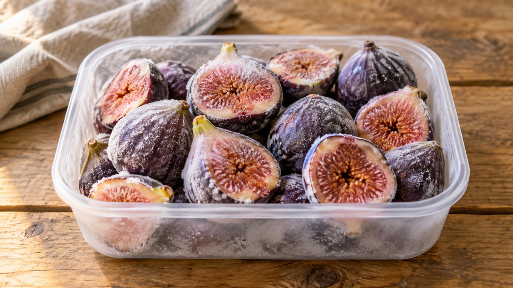

Unsweetened Frozen Figs
Mediterranean · Freezing · About 25 min active prep; total estimate 4 hr 25 min including freezing. Follow the doneness endpoint rather than the clock.
Yield: About 1 lb before trimming

Ingredients
- 1 lb fully ripe, sound figs
Directions
- Rinse figs gently, drain and remove stems. Peel if desired; leave whole or halve. Discard moldy or damaged fruit.
- Spread in one layer on a lined freezer tray. Freeze until firm.
- Transfer promptly into labeled freezer containers or bags, removing excess air; seal and keep frozen.
- Thaw in the refrigerator for compote or sauce, or cook from frozen. Expect a softer texture than fresh figs.
Notes & serving ideas
This is an unsweetened tray pack. Pale varieties may darken; the source provides an optional ascorbic-acid treatment if color retention matters. No extra fruit acid is needed for this freezer preparation.
Harvest reference batch: 1 lb figs. Only this primary crop is deducted; secondary ingredients and finished yields are not calculated.
Use in Harvest Helper I made this → Add to pantry
Review & safe storage
Original recipe: Family Recipes culinary preparation informed by the references below; the exact formula and storage life have not been laboratory validated or kitchen-tested here. References do not validate it for canning.
Keep frozen at 0°F (−18°C) or below. Thaw in the refrigerator at 40°F (4°C) or below, or use directly in cooking as directed. Use thawed portions within 3 days as a conservative household practice. This recipe is not shelf-stable.
Work with clean hands, sound produce and clean equipment. Refrigerate prepared perishables promptly, within 2 hours (1 hour above 90°F / 32°C); cool hot mixtures in shallow small containers. Never thaw perishables on the counter.